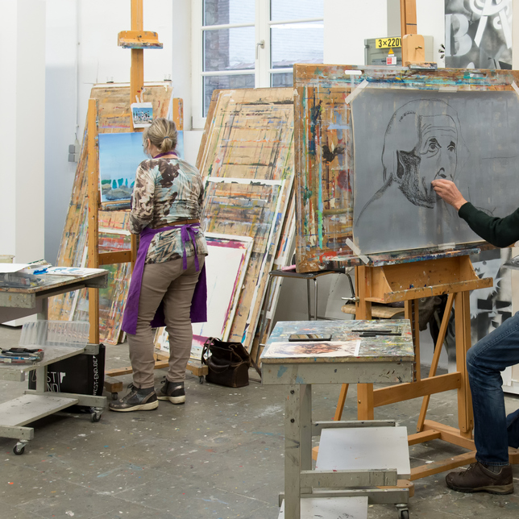
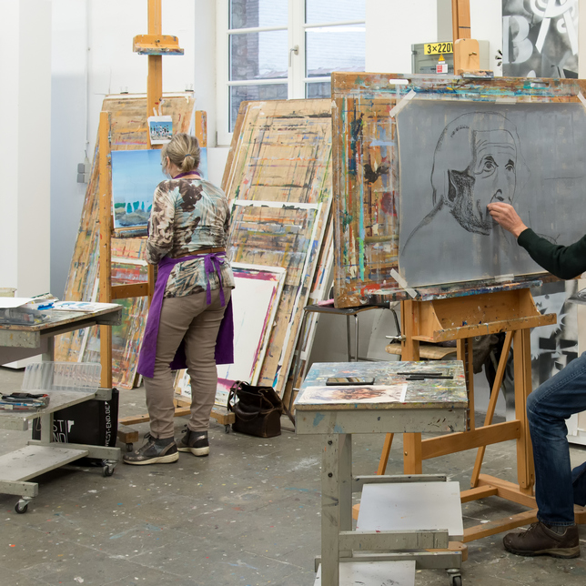
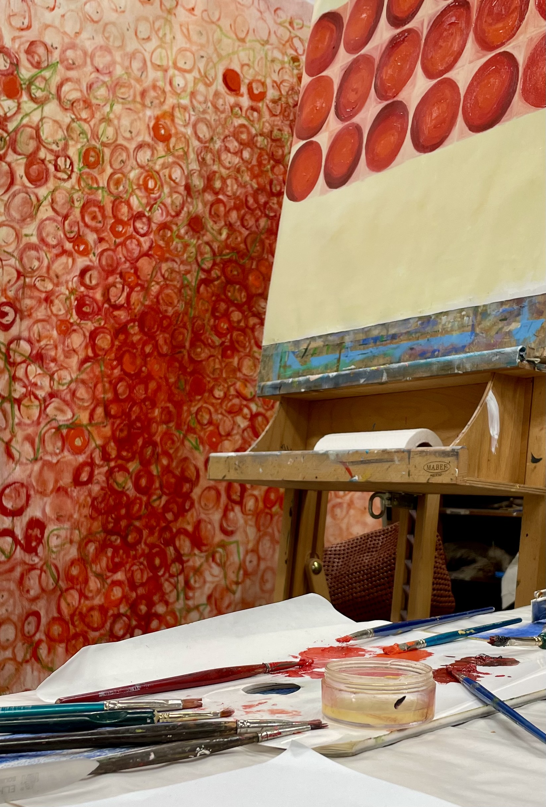
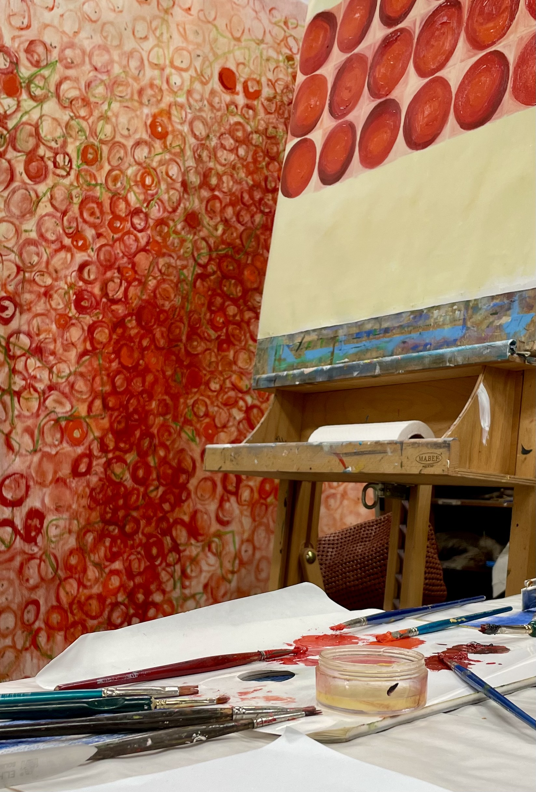

- Voor wie
graad 1 (lj1 en 2) graad 2 (lj 3-4-5-6) 2 lesuren per week
Waar: Spiegelstraat peutie houtem koningslo kassei - Wat?
inhoudelijke duiding wanneer?
Wat breng je mee? materiaallijst - Je leert over kunst en kunstenaars
Je mag vlekken maken. Van daaruit reizen we verder in onze fantasie.
Met potloden, verf, schaar en lijm, klei en afvalmateriaal beleven we mooie
avonturen op papier of in de ruimte - We nemen de wereld waar vanuit ons tekenmateriaal. Elke week gaan
we samen op ontdekking in het atelier!


 
